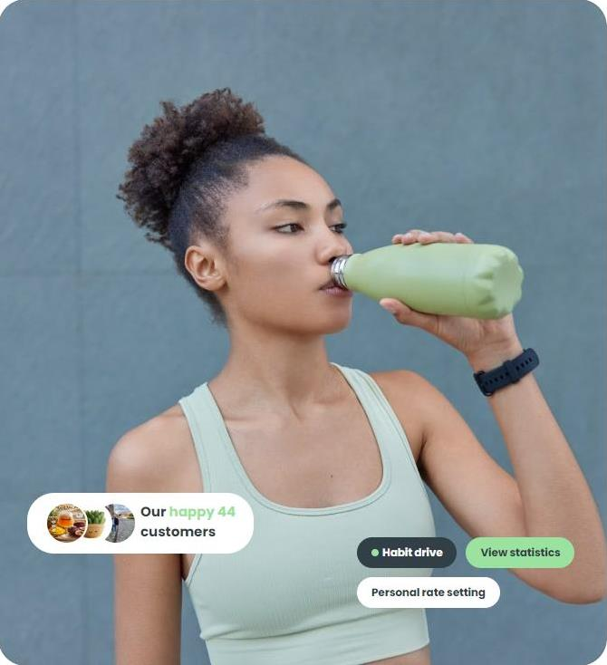
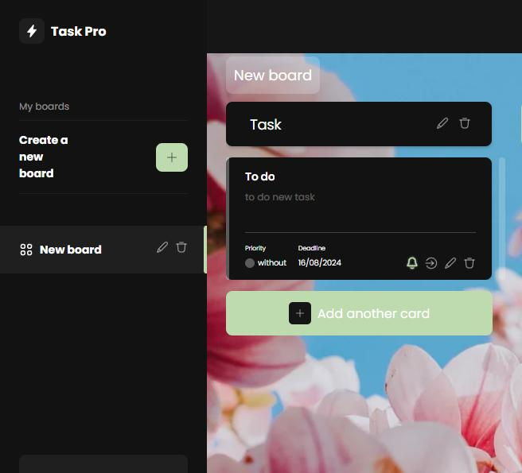
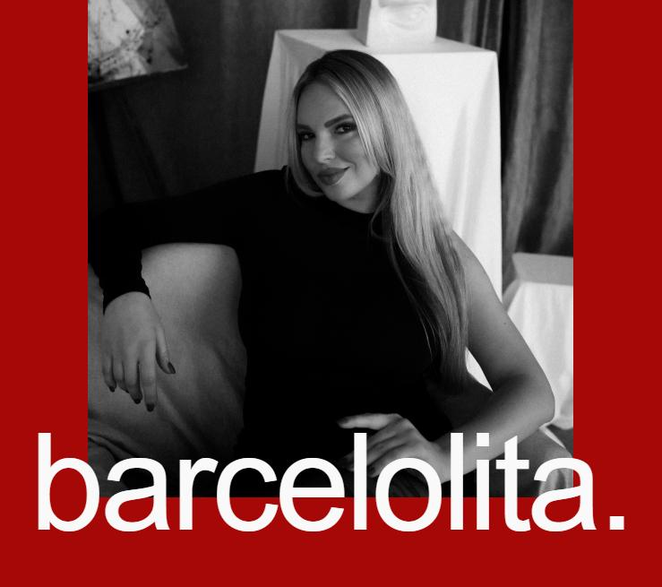
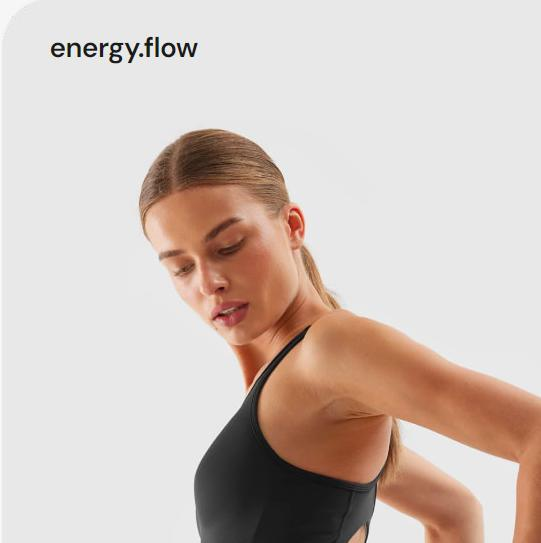
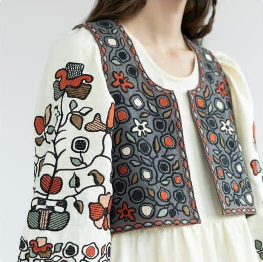

About me
Hello! My name is Sergiy, I studied on Full stack developer and during the courses I studied different technologies for web-development like Javascript, React, Node.js also too HTML+CSS. Also during my studies I got to know great developers with which it was a pleasure to work in a team. Now I have few personals and few command projects which you can see below.
Contact for me
My projects
-

AquaTrack
Technologies: [React/Redux, JS, Axios, Node.js, Express, REST Api, MongoDB, Vite]
A website with an adaptive layout. This is a team project of a drinking water tracking app. Where you can control the amount of water you drink per day. And you can view the statistics of water consumed for a month. Also in this app there is a language changer.
Role in project: [TeamLid on backend, frontend/backend developer]
-

TaskPro
Technologies: [React/Redux, JS, Axios, Node.js, Express, REST Api, MongoDB, Vite]
A website with an adaptive layout. This is a team project of a board application with tasks. Options: adding, editing and deleting boards, as well as columns and cards. User registration is available. Also possible to change the background.
Role in project: [frontend/backend developer]
-

Barcelolita
Technologies: [JS, HTML+CSS, Vite]
A website with an adaptive layout. This is a team project of a one-page website for a photographer, which presents a gallery of her work, as well as prices for her services. There is a language selection option on the website.
Role in project: [frontend developer]
-

EnergyFlow
Technologies: [JS, HTML+CSS, Axios, Vite]
This website is a two-page team project. It the site contains exercises for physical training, and you you can also add them to your favorites and use them later from your mobile phone for your workout. Also, the site was developed using adaptive technologies
Role in project: [TeamLid, frontend developer]
-

UkrainianVibes
Technologies: [HTML+CSS, Vite]
A website with an adaptive layout. This is a team project single page website, a clothing store with ukrainian ornaments. Him adaptiv for mobile, tablet and PC.
Role in project: [TeamLid, frontend developer]
-
AquaTrack
Technologies: [React/Redux, JS, Axios, Node.js, Express, REST Api, MongoDB, Vite]
A website with an adaptive layout. This is a team project of a drinking water tracking app. Where you can control the amount of water you drink per day. And you can view the statistics of water consumed for a month. Also in this app there is a language changer.
Role in project: [TeamLid on backend, developer on frontend/backend]
-
AquaTrack
Technologies: [React/Redux, JS, Axios, Node.js, Express, REST Api, MongoDB, Vite]
A website with an adaptive layout. This is a team project of a drinking water tracking app. Where you can control the amount of water you drink per day. And you can view the statistics of water consumed for a month. Also in this app there is a language changer.
Role in project: [TeamLid on backend, developer on frontend/backend]